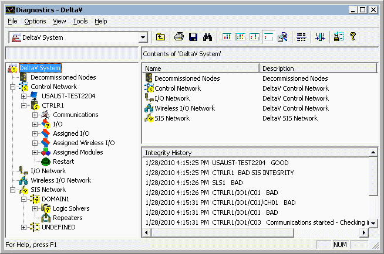
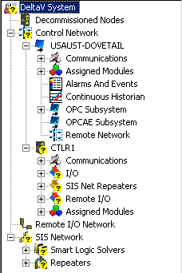
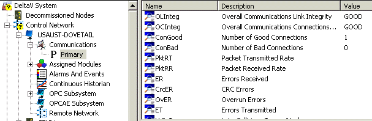

DeltaV Diagnostics
Use DeltaV Diagnostics as a starting point to diagnose nodes (controllers and workstations) and subsystems in your DeltaV System. You can view diagnostic information any time after configuring nodes and placing devices on the control network and downloading the workstation. You can access DeltaV Diagnostics locally from your workstation or remotely using a dial-in modem and standard, off-the-shelf, remote access software. Click to launch the Diagnostics program.

With DeltaV Diagnostics, you can perform the following tasks:
- Display overall status and detailed integrity information for any node and subsystem in the DeltaV control network
- View diagnostic parameters for nodes and subsystems
- Display communication information for controllers and workstations and detailed statistics on I/O cards and devices
- Launch the Process History View program in context with a selected item to display process events for that item
- Diagnose most problems on a remote network from a workstation on the control network and diagnose all problems on a remote workstation from the remote workstation
DeltaV Diagnostics has the same look and feel as the DeltaV Explorer. The left pane shows the hierarchy of nodes and subsystems in the control network. Typically, workstations have communications, assigned modules, alarms and events, Continuous Historian, OPC, and remote network subsystems and controllers have communications, I/O, and assigned modules subsystems. Devices are below the I/O subsystem.

To explore the contents of a node or subsystem, click the plus sign next to it to expand the contents. To see diagnostic information for a node or subsystem, select the node or subsystem, and view the diagnostic information for the selection in the right pane. To change how the diagnostic information is presented, experiment with the different views: List, Details, Comparison, and Verbose. In this figure, diagnostic information for the Primary communications subsystem of the workstation node USAUST-DOVETAIL is displayed.

Four indicators are used to show the status of nodes and subsystems. These indicators appear at the top level in the hierarchy as well as at the specific node or subsystem:


Refer to the online help for complete information about using DeltaV Diagnostics.